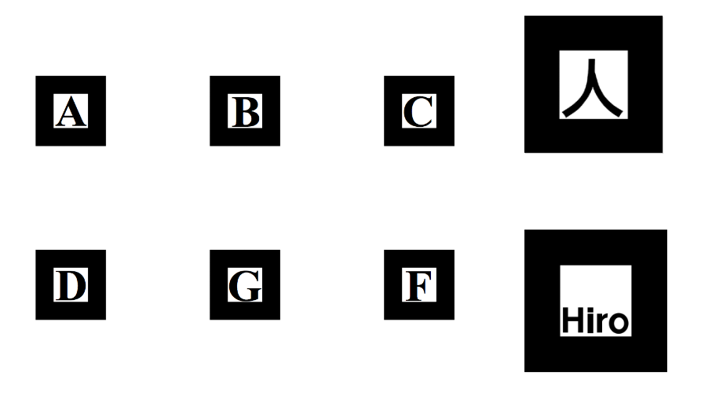
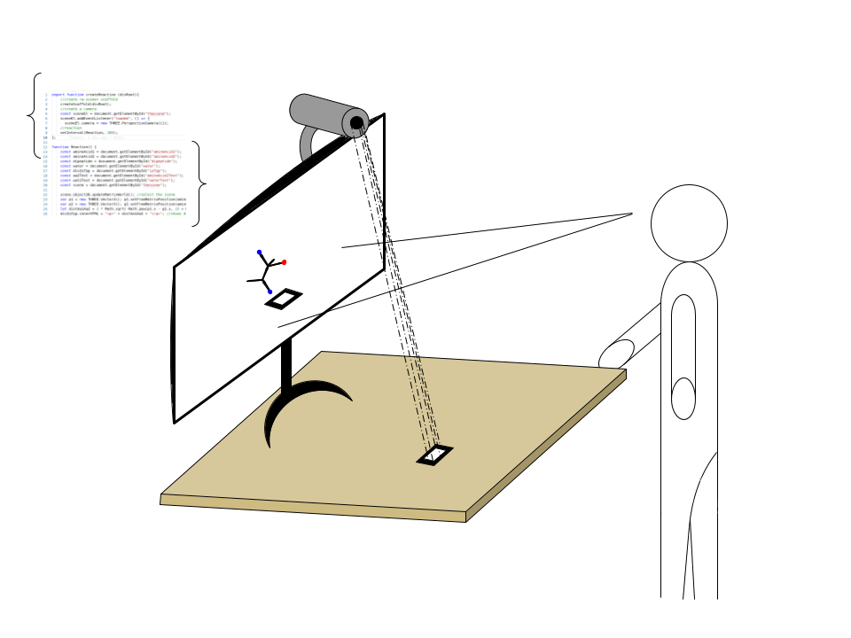

La visualisation de réactions chimiques dans l’espace 3D est un exercice difficile. La Réalité Virtuelle est un outil puissant pour pallier cette difficulté, mais il est extrêmement coûteux. Le professeur assistant Emmanuel Bettler a donc souhaité mettre à disposition de ses étudiants de licence la Réalité Augmentée (AR). La Réalité Augmentée repose sur le principe de superposition à l’écran de la vue d’une caméra et d’objets virtuels. L’apparition, la transformation et le maintien à l’écran de ces objets dépend de la visibilité par la caméra de marqueurs. Ceux-ci sont des motifs imprimés, connus par l’outil utilisé. En voici plusieurs exemples :
Lorsque ces marqueurs apparaissent à la caméra, l’outil les reconnaît et leur superpose l’objet correspondant à l'écran. Dans notre cas, si deux marqueurs correspondent à deux substrats d’une réaction et que la distance les séparant est inférieure à un certain seuil, alors la réaction à lieu et les produits remplacent les substrats. Des marqueurs de conditions expérimentales peuvent être nécessaires. Le principe en schéma :
Une illustration schématique :
Une illustration en vidéo :
3D visualisation of chemical reactions is a difficult exercise. Virtual Reality is a powerful tool to remedy such difficulty, but it is very costly. Asst. Pr. Emmanuel Bettler decided to make available Augmented Reality (AR) to its bachelor students. AR is based on the principle of superposition on the screen of: a camera vue and virtual objects. The apparition, transformation and maintenance on the screen of these objects depends on the marker's visibility for the camera. These markers are printed motifs. Here is an example:
When these markers appear to the camera, the tool recognises them and overlays their corresponding object on the screen. In our case, if two markers correspond to two substrates of a reaction and they are at a distance inferior to a certain threshold, then the reaction takes place and the products replace the substrates. Markers for experimental conditions might be necessary. The principle summarized by a schematic:
Schematic to illustrate:
Illustrative video:
La visualizzazione 3D di reazioni chimiche nello spazio est una prova difficile. La realtà virtuale è uno strumento che permette di superare questa difficoltà, ma sfortunatamente è una tecnologia troppo costosa per essere alla portata di tutti. Il professore Emmanuel Bettler ha quindi deciso di mettere a disposizione dei suoi studenti la Realtà Aumentata (AR). La Realtà Aumentata si basa sul sovrapporre allo schermo l'immagine di una fotocamera con degli oggetti 3D virtuali. L'apparizione, la trasformazione e il mantimento di quest'ulltimi dipende dalla visibilità di sengalini da parte della telecamera. I segnalini sono semplicemente dei motivi stampati su carta, che possono essere riconosciuti dallo strumento AR. Qua sotto qualche esempio:
Quando i segnalini appaiono nel campo visivo della fotocamera, il programma li riconosce e gli sovvrapone l'oggetto 3D corrispondente allo schermo. Nel nostro caso, se due segnalini corrispondono a due substrati di una reazione e che la distanza fra i due è inferiore a un certo valore soglia, allora la reazione può svolgersi e i prodotti rimpiazzano i reagenti. Dei segnalini di condizioni esperimentali possono essere necessari (temperatura, pH, etc.). Schema del principio base:
Un'illustrazione schematica:
Video illustrattivo: